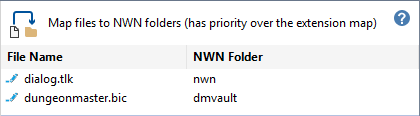
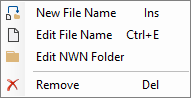
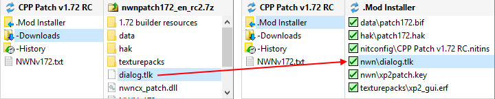

This map associates specific file names with target folders in the Installation or User Files directory. The extension map is ignored for files specified in this list.

Click the  Edit Icon, Right-Click, Double-Click or press the Space Bar to access the Map Files menu.
Edit Icon, Right-Click, Double-Click or press the Space Bar to access the Map Files menu.

File names must include the extension name (eg FileName.extension). Typically, the extension is one of the names defined in the Extensions map.
For example, dialog.tlk is copied to the Installation or User Files root directory (nwn) instead of the default tlk folder.

Work with the Files map